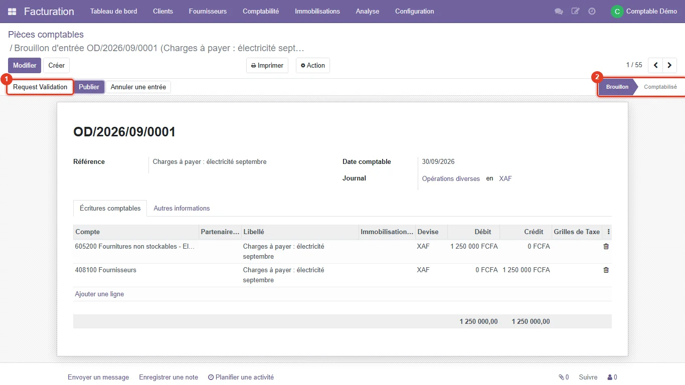
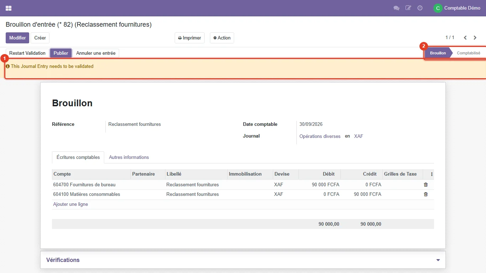

Objectif. Faire passer une écriture par le circuit saisie puis validation.
Où dans Odoo 15Pièce comptable en brouillon › Request Validation


Ce que vous faites
- Le saisisseur ouvre l'écriture et clique sur Request Validation (1).
- Le valideur reçoit une activité ; il contrôle la pièce et le justificatif.
- Il valide ou rejette avec un commentaire.
- Une fois validée, l'écriture peut être comptabilisée.
À vérifier avant de continuer
0 / 1À éviter.
- Ne contournez pas la validation en changeant de journal.
Exercice sur la base de test
Demandez la validation de votre charge à payer.